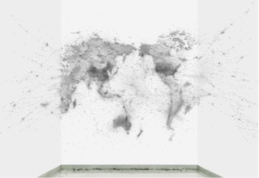
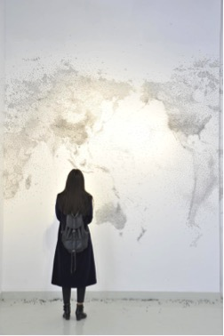
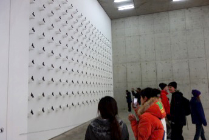
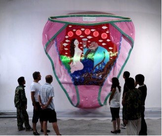
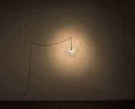
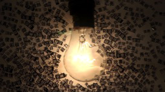

"My method is to take the utmost trouble to find the right thing to say, and then to say it with the utmost levity." George Bernard Shaw (1856-1950) Answers to Nine Questions (1896)
Wang Zhiyuan cultivates an enigmatic gaze, and even a somewhat reclusive persona. Refreshingly, his artistic ego seems carefully overseen by Taoist wisdoms that pacify impatience or arrogance, and encourage him to attune to the rhythms of nature rather than succumb to the artificialities of social hierarchies. But his unassuming character belies his intensely astute observations on China's current economic expansionism. Wang was born into Mao's "Great Leap Forward" and its catastrophic fanaticism to rapidly transform a predominantly agricultural society into an industrial powerhouse in just a few years. His 1960s childhood in Tianjin was nothing like his Beijing life today. As an artist, one of his most pressing motivations is to highlight the superficiality and overstimulation of our 21st century existence, juxtaposing commerce, censorship, and climate change, with the unstoppable momentum of big dreams and instant fortunes. He envisions entire populations, like millions of dizzy "flies" caught between the glittering promises of the future and the frenzied demands of the present, in the context of an eroding "world map" and the menacing consequences of tormenting mother nature.


A decade ago, China surpassed the US in carbon dioxide emissions due to fossil fuel use and cement production. In 2006 it became the world's largest C02 emitter and according to many reports, its coal production has increased ten-fold since the early 1960s, with massive increases in infrastructure projects and housing construction. Its biggest test is to help itself and the world at large to solve our enormous pollution problems. Paradoxically, just as China's Brobdingnagian manufacturers energetically pump out a myriad of cheaper goods for the world to buy, its "super rich" consumer base is proudly acquiring an equivalent myriad of luxury goods and services in order to be seen spending. As the very biggest emerging market, soon expected to change the face of global politics, alongside India, and others like Indonesia, Brazil, Mexico, etc., China's "Consumer Confidence Index" (according to Nielsen’s 2015 4th Quarter report) shows its consumers are actually feeling much more self-assured, with one of the lowest levels of “recessionary sentiment” in the world, compared to its American or German counterparts. But the same report found that the "economy" was listed as its biggest concern for the future of the Asia-Pacific region, followed by work-life balance and health.
As Wang's "fragmented" symbolism and overwhelming installations so eloquently convey, contemporary China is experiencing an ‘everything goes’ mentality that melds seemingly unbridled ambition with endless forms of distraction. And the mix includes art. This theme is also crystallized in Ted Koppel’s celebrated documentary entitled The People’s Republic of Capitalism which reveals the increasing interdependence of China and the US, and the fragile ecosystems of an interconnected world. And much of Wang's work has also been inspired by complexity and chaos theory. His artistic intuitions seem to be at the very threshold of a global dynamism that is functioning in unpredictable and irreversible ways. His own migratory experience and international interests have shown him both the unique privilege and inevitable costs of looking westward then eastward, and back again.
But Wang's art is not only a playful portrait of contemporary China. His original metaphors work in all cultural contexts, and his objectives are often based on or directed towards a contemporary symbol of the “ordinary man” or global citizen. This is particularly evident in his repeatable They (2004 and 2014) installation, which consists of two hundred bronze or stainless steel humanoid sculptures on wooden boxes arranged in rows. In unison and on a larger-than-life scale, the experience compels viewers to contemplate humanity and themselves at the same time. The artist's dark humour is typically Chinese and perhaps born from a childhood of Maoist propaganda, where the imagery of smiling peasants and invincible soldiers conditioned him to laugh while doing his best to tolerate problems. But his artistic stance aims to make serious though not directly critical statements, often challenging us to read 'between the lines' and beyond the acceptability of political climates. During the Cultural Revolution anyone who defaced an image of Mao risked death. And two decades later we saw an explosion of Pop-style imagery, but even today there appears to be some uneasiness about mocking him in public.

Wang arrived alone in Australia in 1989, shortly after the Tiananmen Square massacre, to study and find a new voice in a strange land. His resourcefulness and comprehensive Chinese art education bolstered his resolve to "make good" in the art system while injecting satire into his work. Wang's creative development during and after his Australian experience was energised not just by the cross-pollination of otherwise disparate cultures but also by the fact that he was at liberty to "remix" anything - "appropriating any concept, medium or style" and combining it with any historical period, issue and particular emotion.
His Object of Desire (2008) installation is indeed an elaborate and garish metaphor, featuring gigantic fibreglass, self-branded panties, and the "Golden Voice" of 1930s Shanghainese singer Zhou Xuan. With her tender laments - "when are you coming again?" - in the background, Wang sets up a series of sly one-liners about power, lust and a kind of collective prostitution, clearly indicting its most vulgar and absurd fantasies. His big-small, cheap-precious, beauty-beast continuum reiterates the problems at work in a world corrupted by what he calls a "new-cheap-capitalism". And for this artist, the things we discard, reject, or disregard are vital and determinant - often better (or worse) than we once thought. His boldly individual style cleverly parodies our globalised consumption, market insatiability, and social decadence.

China's much quoted "rising power" and the frightful public debts haunting the US, Europe, and Japan, challenge the time-honoured western ideals of democracy flanked by economic success. The old “freedom works” slogan is coming under pressure as authoritarianism seems to be gaining favour, once again. And while tectonic shifts in global imperialism have obviously narrated human history, and continuously tempting customers' desires to buy is the natural agenda of capitalism, it is literally a stated goal of China’s current leaders. But the new world “global consuming class” seems to have more in common across national borders, in terms of what it hungers for, than within them, in terms of how it defines itself. We are constantly told that markets everywhere will continue to look more Chinese, more cosmopolitan, more luxury-conscious, and evermore virtual. In Close to the Warm (2013) Wang's supersized interpretation of the flurry of “moths to a flame” phenomenon empathises our own cultural and political phototaxis. As consumers we are objectified, like insects, and the artist's message seems to warn against the intoxication of hedonism and the pursuit of "the good life" at all costs. His "light source" analogy can be read in several ways, such as the hyper-real atmosphere of advertising, directly equating commodities and personal happiness, that encourages our accumulation of possessions to bring us closer to vain notions of self-actualization, security or popularity. By stressing individual choice, advertising falsely implies that control lies with the customer. Wang's imagination constructs fantastical allegories that allow us to reflect on reality, while denouncing the glamorization of "needs" that are unreasonable to ordinary human beings. Wang aims to elevate the intimate, the poetic, and even the kitsch, to communicate with and about everyone. His oversized underpants purging our shared techno-cultured addictions, and tornados of plastic whipping up our collective conscience, have compelling psychological dimensions for all of us. No matter where we live. Of course, over-sizing, as we well know from Jeff Koons's monumental works, provides surprising and lively perspectives. But since the Romantics, we have often seen the artist as a rebel or a prophet, wielding an irresistible mystique and deeper awareness. As Wang has described in his thesis, “I want my art to be about something bigger than me. If it wasn’t involved in society I would feel guilty.”


Essentially, Wang Zhiyuan's artistic commitment is about our ordinariness, and the human scale, about simplicity, and what is taken for granted or mindlessly consumed. It is about the democratisation of our shared environmental and social responsibilities. And he represents the soft power of globally conscious artists - "the lonely poets" - who are trying to raise our consciousness and emotional engagement, where politics and organised religion have failed. Generating bigger fortunes, better ways of acquiring them, and cheaper products to buy will not save us. It seems this artist is more interested in helping us to consider ways art equates to the solutions in real life rather than its inflatable or distracting alter egos. Here I am reminded of George Bernard Shaw's visionary epic and the insights of his characters as they discuss the evolving stages in the future progress of humankind:
ECRASIA. You have no right to say that I am not sincere. I have found a happiness in art that real life has never given me. I am intensely in earnest about art. There is a magic and mystery in art that you know nothing of.
THE SHE-ANCIENT. Yes, child: art is the magic mirror you make to reflect your invisible dreams in visible pictures. You use a glass mirror to see your face: you use works of art to see your soul. But we who are older use neither glass mirrors nor works of art. We have a direct sense of life. When you gain that you will put aside your mirrors and statues, your toys and your dolls." Extract from Back to Methuselah" Part V (A Metabiological Pentateuch) 1921.
Rosa Maria Falvo
Milan 2016